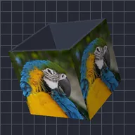

กล่องกลวง

กล่องที่เปิดด้านบนและล่าง: เลเยอร์คลุมด้านนอก ส่วนด้านในใช้สีภายใน
การตั้งค่า
| การตั้งค่า | ประเภท | ช่วงค่า | ค่าเริ่มต้น |
|---|---|---|---|
| หมุน X | มุม | -3600° ถึง 3600° | -28° |
| หมุน Y | มุม | -3600° ถึง 3600° | -35° |
| หมุน Z | มุม | -3600° ถึง 3600° | 0° |
| ความกว้าง | ตัวเลข | 0.02 ถึง 5 | 0.7 |
| ความสูง | ตัวเลข | 0.02 ถึง 5 | 0.7 |
| ความลึก | ตัวเลข | 0.02 ถึง 5 | 0.7 |
| ความหนา | ตัวเลข | 0.005 ถึง 1 | 0.06 |
| ความเรียบเนียน | ตัวเลข | 0 ถึง 1 | 0.15 |
| สีภายใน | สี | – | #3D4152 |
| ตำแหน่ง | จุด (X, Y) | -5000 px ถึง 5000 px | 0 px, 0 px |
| สเกล | ตัวเลข | 0.05 ถึง 10 | 1 |
| มุมมอง | ตัวเลข | 0 ถึง 1 | 0.5 |
| การแรเงา | ตัวเลข | 0 ถึง 1 | 0.6 |
| มุมแสง | มุม | -3600° ถึง 3600° | 135° |
| ความเงา | ตัวเลข | 0 ถึง 1 | 0.3 |
| การจัดแสง | ตัวเลือก | คลาสสิก, นุ่ม, โดยตรง | คลาสสิก |
| แสงโดยรอบ | ตัวเลข | 0 ถึง 2 | 0.03 |
| ความสูงแสง | ตัวเลข | 0 ถึง 20 | 3 |
| สีแสง | สี | – | #FFFFFF |
| ความคมของแสงสะท้อน | ตัวเลข | 1 ถึง 200 | 15 |
| พื้นผิว | ตัวเลือก | พอดี, ปูกระเบื้อง, ยืด | พอดี |
| ทำซ้ำ X | ตัวเลข | 0.01 ถึง 100 | 1 |
| ทำซ้ำ Y | ตัวเลข | 0.01 ถึง 100 | 1 |
| สะท้อน | เปิดหรือปิด | – | ปิด |
| มุมพื้นผิว | มุม | -3600° ถึง 3600° | 0° |
| ออฟเซตพื้นผิว | จุด (X, Y) | -100 ถึง 100 | 0, 0 |
| ครอบตัดพื้นผิว | ตัวเลข | 0.05 ถึง 10 | 1 |
| จุดยึดพื้นผิว | ตัวเลือก | กึ่งกลาง, มุม | กึ่งกลาง |
| สไตล์ | ตัวเลือก | คลาสสิก, มาตรฐาน | คลาสสิก |